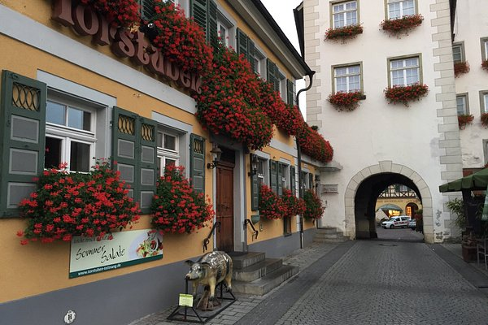

Die Gärten von Lindau blühen am schönesten im Frühling und Sommer. Der Sommer ist die Haupttouristenzeit in Lindau.
Friedrichshafen - Meersburg
33 min (28 km)
Meersburg liegt am nördlichen Ufer des Bodensees, am Übergang vom Obersee zum Überlinger See auf einer Höhe von 400 bis 500 Metern.

Friedrichshafen - Meckenbeuren
13 min (14 km)
Besuchen Sie das Humpismuseum im Humpisschloss im Stadtteil Brochenzell oder das Ravensburger Spieleland: Ein 25 Hektar großer Freizeitpark im Stadtteil Liebenau.